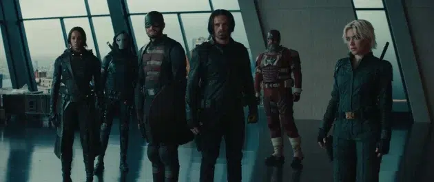
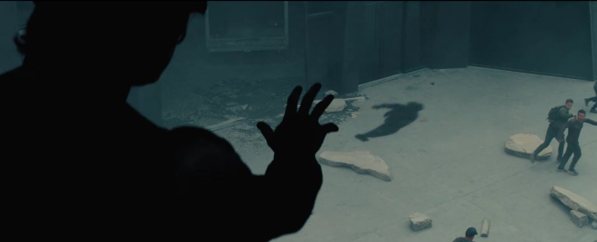

Thunderbolts : la bande-annonce dévoile un ennemi inattendu

Introduction
Le Marvel Cinematic Universe (MCU) continue d’évoluer, et cette fois-ci, c’est avec une équipe d'anti-héros que Marvel entend surprendre. Le film Thunderbolts s’annonce comme un tournant majeur, en présentant une tonalité plus sombre et une menace inattendue. Voici ce qu’il faut savoir sur cette bande-annonce qui a fait sensation lors du Super Bowl 2025.
Un trailer dévoilé au Super Bowl
Cette nuit, à l’occasion du Super Bowl, Marvel a dévoilé la toute première bande-annonce de Thunderbolts. Un film très attendu qui promet une approche plus sombre et violente du MCU.
Contexte du MCU et situation des Thunderbolts
Le Marvel Cinematic Universe est en pleine transition après la fin de la saga de l'Infini. Avec l’apparition des multivers et une gestion plus stricte des super-héros par le gouvernement, une nouvelle équipe d’anti-héros, les Thunderbolts, est mise en place.
Un casting impressionnant
Le film réunit plusieurs visages familiers du MCU : Yelena Belova (Florence Pugh), Bucky Barnes (Sebastian Stan), Red Guardian (David Harbour), John Walker / US Agent (Wyatt Russell), et bien d’autres.
Le groupe de choc
Les révélations du trailer
Le trailer a révélé des éléments clés comme la présence de la tour des Avengers et du Raft, des lieux emblématiques du MCU. Mais la plus grande surprise reste l’introduction de Sentry, un personnage au pouvoir destructeur.

Qui est Sentry ?
Sentry, alias Robert Reynolds, est souvent comparé à Superman. Cependant, il est hanté par une double personnalité maléfique : The Void. Dans le trailer, on aperçoit une première vision de son immense pouvoir et de sa menace pour le MCU.
Un Marvel plus sombre
Avec Thunderbolts, Marvel semble prendre un virage plus mature et sombre, abandonnant les blagues légères pour un ton plus sérieux et brutal.
Conséquences et attentes
Ce film pourrait marquer un tournant pour le MCU en mettant en avant des héros plus ambigus. Le rôle de Sentry et les implications de son pouvoir restent des questions ouvertes.
Date de sortie et lien du trailer
Le film est prévu pour juillet 2025. Découvrez la bande-annonce ici : Voir le trailer.
Conclusion
Avec la promesse d’un ton plus sombre et la révélation de personnages aussi puissants que Sentry, Thunderbolts semble être un film qui redéfinira les codes du MCU. Alors que le film approche de sa sortie en juillet 2025, l’attente ne cesse de grandir. Les fans du MCU ont désormais un nouvel horizon à explorer, où les héros sont plus complexes, et les menaces, plus graves.